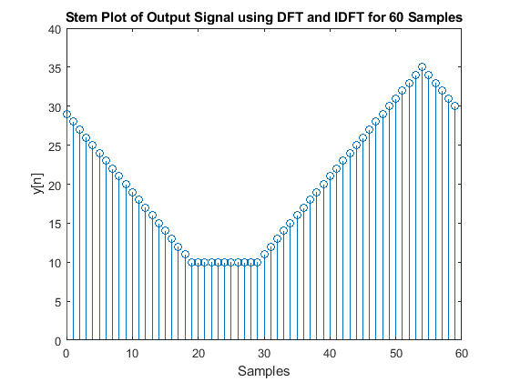

Contents
- QUESTION 1
- Question 2
- Question 2a - Changes in the code below
- Question 2b
- Question 2c
- Question 2d
- Question 2e
- Question 2f
- Question 2g
- Question 3
- Question 3a - At the function of for IDFT
- Question 3b
- Question 3c
- Question 3d
- Question 3e
- Question 3f
- Question 4
- Question 4a
- Question 4b
- Question 4c
- Question 4d
- Question 4e
- Functions provided for the lab
QUESTION 1
DO NOT REMOVE THE LINE BELOW MAKE SURE 'eel3135_lab11_comment.m' IS IN THE SAME DIRECTORY AS THIS FILE
clear; close all; clc; type('eel3135_lab10_comment.m')
%% Question 1 Comment Code
clear all; clc; close all;
fs = 16000;
tt = 0:1/fs:0.01-1/fs;
w0 = 888*pi;
w1 = 3520*pi;
w2 = 14080*pi;
x = 0.5 + cos(w0*tt) + cos(w1*tt + pi/4) + cos(w2*tt + 2*pi/3);
N = [50,length(x),500,1000];
X1 = fft(x,N(1));
X2 = fft(x,N(2));
X3 = fft(x,N(3));
X4 = fft(x,N(4));
% Answer in your comments: How is the DFT (using the FFT algorithm)
% calculated when N is larger than the length of X?
% (Hint: read help FFT)
%
% When N is larger then the length of x, the input signal x is zero-padded
% to length N before computing the FTT. The zero-padding allows for
% increased frequency resolution of the DFT without adding new information.
% Answer on your comments: How is the DFT (using the FFT algorithm)
% calculated when N is smaller than the length of X?
%
% When N is smaller than the length of x, the input signal is truanced to
% length N before computing FFT. This truancation may cause loss of
% information and spectral leakage.
% Answer in your comments: Why would you not want to always make N as large
% as possible?
%
% Making N very large increases computational complexity and processing
% time. Also, zero-padding beyond a certain point does not add a new
% frequency content, only interpolates the spectrum. Very large N may also
% reduce the amplitude of spectral peaks due to energy over more bins.
b1 = -ceil((N(1)-1)/2):floor((N(1)-1)/2);
b2 = -ceil((N(2)-1)/2):floor((N(2)-1)/2);
b3 = -ceil((N(3)-1)/2):floor((N(3)-1)/2);
b4 = -ceil((N(4)-1)/2):floor((N(4)-1)/2);
% Answer in your comments: What frequencies do the peaks represent?
%
% The peaks correspond to the frequencies of the cosing components in the
% signal x. Specifically, the preaks represent frequencies at +/- w0/(2*pi),
% +/- w1/(2*pi), and +/- w2/(2*pi) in Hz. These correspond to the normalized
% frequencies of the cosines in the signal.
f1 = b1*fs/N(1);
f2 = b2*fs/N(2);
f3 = b3*fs/N(3);
f4 = b4*fs/N(4);
w1 = 2*pi/N(1)*b1;
w2 = 2*pi/N(2)*b2;
w3 = 2*pi/N(3)*b3;
w4 = 2*pi/N(4)*b4;
figure
subplot(221)
plot(b1,fftshift(abs(X1)))
hold on;
plot(b1,fftshift(abs(X1)), '.', 'markersize', 8)
hold off;
xlim([-N(1)/2 N(1)/2]); ylim([0 100]);
xlabel('Bin Number')
ylabel('Magnitude')
title(sprintf('Length %i DFT',N(1)))
subplot(222)
plot(b2,fftshift(abs(X2)))
hold on;
plot(b2,fftshift(abs(X2)), '.', 'markersize', 8)
hold off;
xlim([-N(2)/2 N(2)/2]); ylim([0 100]);
xlabel('Bin Number')
ylabel('Magnitude')
title(sprintf('Length %i DFT',N(2)))
subplot(223)
plot(b3,fftshift(abs(X3)))
hold on;
plot(b3,fftshift(abs(X3)), '.', 'markersize', 8)
hold off;
xlim([-N(3)/2 N(3)/2]); ylim([0 100]);
xlabel('Bin Number')
ylabel('Magnitude')
title(sprintf('Length %i DFT',N(3)))
subplot(224)
plot(b4,fftshift(abs(X4)))
hold on;
plot(b4,fftshift(abs(X4)), '.', 'markersize', 8)
hold off;
xlim([-N(4)/2 N(4)/2]); ylim([0 81]);
xlabel('Bin Number')
ylabel('Magnitude')
title(sprintf('Length %i DFT',N(4)))
figure
subplot(221)
plot(f1,fftshift(abs(X1)))
hold on;
plot(f1,fftshift(abs(X1)), '.', 'markersize', 8)
hold off;
xlim([-fs/2 fs/2]); ylim([0 81]);
xlabel('Frequency (Hz)')
ylabel('Magnitude')
title(sprintf('Length %i DFT',N(1)))
subplot(222)
plot(f2,fftshift(abs(X2)))
hold on;
plot(f2,fftshift(abs(X2)), '.', 'markersize', 8)
hold off;
xlim([-fs/2 fs/2]); ylim([0 81]);
xlabel('Frequency (Hz)')
ylabel('Magnitude')
title(sprintf('Length %i DFT',N(2)))
subplot(223)
plot(f3,fftshift(abs(X3)))
hold on;
plot(f3,fftshift(abs(X3)), '.', 'markersize', 8)
hold off;
xlim([-fs/2 fs/2]); ylim([0 81]);
xlabel('Frequency (Hz)')
ylabel('Magnitude')
title(sprintf('Length %i DFT',N(3)))
subplot(224)
plot(f4,fftshift(abs(X4)))
hold on;
plot(f4,fftshift(abs(X4)), '.', 'markersize', 8)
hold off;
xlim([-fs/2 fs/2]); ylim([0 81]);
xlabel('Frequency (Hz)')
ylabel('Magnitude')
title(sprintf('Length %i DFT',N(4)))
figure
subplot(221)
plot(w1,fftshift(abs(X1)))
hold on;
plot(w1,fftshift(abs(X1)), '.', 'markersize', 8)
hold off;
xlim([-pi pi]); ylim([0 81]);
xlabel('Normalized Frequency (rad/s)');
ylabel('Magnitude')
title(sprintf('Length %i DFT',N(1)))
subplot(222)
plot(w2,fftshift(abs(X2)))
hold on;
plot(w2,fftshift(abs(X2)), '.', 'markersize', 8)
hold off;
xlim([-pi pi]); ylim([0 81]);
xlabel('Normalized Frequency (rad/s)');
ylabel('Magnitude')
title(sprintf('Length %i DFT',N(2)))
subplot(223)
plot(w3,fftshift(abs(X3)))
hold on;
plot(w3,fftshift(abs(X3)), '.', 'markersize', 8)
hold off;
xlim([-pi pi]); ylim([0 81]);
xlabel('Normalized Frequency (rad/s)');
ylabel('Magnitude')
title(sprintf('Length %i DFT',N(3)))
subplot(224)
plot(w4,fftshift(abs(X4)))
hold on;
plot(w4,fftshift(abs(X4)), '.', 'markersize', 8)
hold off;
xlim([-pi pi]); ylim([0 81]);
xlabel('Normalized Frequency (rad/s)')
ylabel('Magnitude')
title(sprintf('Length %i DFT',N(4)))
% Answer in your comments: How does the length of the DFT affect the
% magnitude? Be sure to zoom in on the bases of the peaks in each DFT
% magnitude plot.
%
% Increasing the length of the DTF (N) increases frequency resolution,
% making peaks sharper and more distinguishable. With small N, peaks are
% broader and may overlap, reducing frequency resolution. Zero-padding (N
% > length(x)) interpolates the specturm, making peaking appear smoother.
% However, the magnitude of the peaks remains approximately the same; only
% the resolution changes.
Question 2
n=0:59; x = 0.75 + cos(pi*n/20) + cos(pi*n/15) + cos(pi*n + 2*pi/3); w_DTFT = linspace(0, 2*pi-pi/5000, 10000); % NOTE: USE THE FOLLOWING COMMENTED LINE FOR PLOTTING THE DFT ATOP THE DTFT % (YOU NEED TO DEFINE w_DFT), THIS WILL MAKE THE PLOTS EASIER TO INTERPRET % plot(w_DTFT,abs(X_DTFT)); % hold on; plot(w_DFT,abs(X_DFT),'.', 'markersize', 10); hold off;
Question 2a - Changes in the code below
Question 2b
x_dft = DFT(x); f = (0:length(x_dft)-1)*(1/length(x_dft)); % frequency bins(normalized) figure; plot(f, abs(x_dft)); xlabel('Normalized Frequency (cycles/sample)'); ylabel('Magnitude'); title('Magnitude of DFT of x[n]'); grid on; x_dtft = DTFT(x, w_DTFT); figure; plot(w_DTFT, abs(x_dtft)); xlabel('Normalized Frequency \omega (Radians/Sample)'); ylabel('Magnitude'); title('Magnitude of DTFT of x[n] for 60 samples'); grid on;
Question 2c
% Frequency vector for DFT (normalized) w_dft = 2*pi*(0:length(x)-1)/length(x); figure; x_dtft = DTFT(x, w_DTFT); plot(w_DTFT, abs(x_dtft)); x_dft = DFT(x); hold on; plot(w_dft, abs(x_dft),'.', 'MarkerSize',10); % Use red circles for DFT points legend('DTFT', '60-length DFT'); hold off; xlabel('Normalized Freqeuncy \omega (rads/s)'); ylabel('Magnitude'); title('DFT and DTFT Plot for 60 samples'); grid on;
Question 2d
figure; x_1 = x(1:55); % Freqency vector for DFT (normalized) w_dft = 2*pi*(0:length(x_1)-1)/length(x_1); x_dtft = DTFT(x_1, w_DTFT); plot(w_DTFT, abs(x_dtft)); x_dft = DFT(x_1); hold on; plot(w_dft, abs(x_dft),'.', 'MarkerSize',10); % Use red circles for DFT points legend('DTFT', '55-length DFT'); hold off; xlabel('Normalized Freqeuncy \omega (rads/s)'); ylabel('Magnitude'); title('DFT and DTFT Plot for 55 samples'); grid on;
Question 2e
figure; n = 0:64; x = 0.75 + cos(pi*n/20) + cos(pi*n/15) + cos(pi*n + 2*pi/3); % Freqency vector for DFT (normalized) w_dft = 2*pi*(0:length(x)-1)/length(x); x_dtft = DTFT(x, w_DTFT); plot(w_DTFT, abs(x_dtft)); x_dft = DFT(x); hold on; plot(w_dft, abs(x_dft),'.', 'MarkerSize',10); % Use red circles for DFT points legend('DTFT', '65-length DFT'); hold off; xlabel('Normalized Freqeuncy \omega (rads/s)'); ylabel('Magnitude'); title('DFT and DTFT Plot for 65 samples'); grid on;
Question 2f
figure; n = 0:199; x = 0.75 + cos(pi*n/20) + cos(pi*n/15) + cos(pi*n + 2*pi/3); % Freqency vector for DFT (normalized) w_dft = 2*pi*(0:length(x)-1)/length(x); x_dtft = DTFT(x, w_DTFT); plot(w_DTFT, abs(x_dtft)); x_dft = DFT(x); hold on; plot(w_dft, abs(x_dft),'.', 'MarkerSize',10); % Use red circles for DFT points legend('DTFT', '200-length DFT'); hold off; xlabel('Normalized Freqeuncy \omega (rads/s)'); ylabel('Magnitude'); title('DFT and DTFT Plot for 200 samples'); grid on;
Question 2g
% The DF is the same as the DFT, but it's in discrete time. The DFT is % sampling a few points from the DTFT. This makes sense as instead of a % continuous omega_hat term, the DFT transform uses the discreter term % 2*pi*k/N. It is easier for computers to utilize since it's sampling % the DTFT with N samples. The result would be the same when there is % double over the number of samples as the number of input values.
Question 3
clear all; clc;
x = [zeros(1,10) ones(1,35)];
Question 3a - At the function of for IDFT
Question 3b
n = 0:99; x_2 = [x zeros(1, 55)]; figure; stem(n, x_2); xlabel('Samples'); ylabel('x[n]'); title('Stem Plot of Input Signal');
Question 3c
y_n = conv(x_2, x_2); y_sampled = y_n(1:100); figure; stem(n, y_sampled); xlabel('Samples'); ylabel('y[n]'); title('Stem Plot of Output Signal');
Question 3d
x_dft_2 = DFT(x_2); % Converts to time domain % Multiply both DFT's together to get frequency domain equivalent of % convolution x_s = x_dft_2.*x_dft_2; % Take inverse DFT y = IDFT(x_s); figure; stem(n, y); xlabel('Samples'); ylabel('y[n]'); title('Stem Plot of Output Signal using DFT and IDFT'); ylim([0,35]);
Warning: Using only the real component of complex data.
Question 3e
n2 = 0:59; x_60 = [x zeros(1,15)]; x_60 = DFT(x_60); x_s60 = x_60.*x_60; y_60 = IDFT(x_s60); figure; stem(n2, y_60(1:60)); xlabel('Samples'); ylabel('y[n]'); title('Stem Plot of Output Signal using DFT and IDFT for 60 Samples');
Warning: Using only the real component of complex data.
Question 3f
% There is a big difference between the last two solutions and this is due % to the zero-padding. This could be because DFT and IDFT rely on circular % convolution, is the length of the sampled signal is shorter than the % length of the of the convolution, then some previous valies would wrap % around and affect DFT (ailiasing). This happens with the length 60 input % signal since it is not 2*length(x). However, the 100 length signal avoids % this because it is padded to a value greater than 90, so it never wraps % around.
Question 4
Choose a song at least 3 minutes long to use in this problem, and include it in your submission. Load it into MATLAB using audioread. Note that mose audio files will be stereo, so you need to make Sure that you only use one column of audio data for this part of the lab This site has a large archive of free music that you can choose from: https://freemusicarchive.org/static
clear all; clc; [x,fs] = audioread('porcelain-face-official-audio.wav'); x = x(:,1);
Question 4a
x3 = x(1:10000); n = 0:9999; w_DFT = 2*pi*(0:length(x3)-1)/length(x3); tic; x3 = DFT(x3); time = toc; disp(['The calculation time is: ', num2str(time), ' seconds']); figure; plot(w_DFT, abs(x3)); xlabel('Normalized Freqeuncy \omega (rads/s)'); ylabel('Magnitude'); title('DFT Plot for Audio Sample');
The calculation time is: 1.8475 seconds
Question 4b
x3_f = x(1:10000); n = 0:9999; w_DFT = 2*pi*(0:length(x3_f)-1)/length(x3_f); tic; x3_f = fft(x3_f, length(x3_f)); time = toc; disp(['The calculation time is: ', num2str(time), ' seconds']); figure; plot(w_DFT, abs(x3_f)); xlabel('Normalized Freqeuncy \omega (rads/s)'); ylabel('Magnitude'); title('FFT Plot for Audio Sample');
The calculation time is: 0.0003745 seconds
Question 4c
% The difference in the magnitude results aren't apparent. The audio sample % is relatively long since it has 10,000 samples, but both magnitude plots % appear the same even though they were calculated differently.
Question 4d
% THe FFT is much faster than the DFT.
Question 4e
w_DFT = 2*pi*(0:length(x)-1)/length(x); tic; x = fft(x); time = toc; disp(['The calculation time is: ', num2str(time), ' seconds']); figure; plot(w_DFT, abs(x)); xlabel('Normalized Freqeuncy \omega (rads/s)'); ylabel('Magnitude'); title('FFT Plot for Audio Sample');
The calculation time is: 0.21429 seconds
Functions provided for the lab
function H = DTFT(x,w) % DTFT(X,W) compute the Discrete-time Fourier Transform of signal X % acroess frequencies defined by W. H = zeros(1, length(w)); for nn = 1:length(x) H = H + x(nn).*exp(-1j*w.*(nn-1)); end end function X = DFT(x) % DFT(x) compute the N-point Discrete Fourier Transform of signal x % Where N is the length of signal x N = length(x); % FILL THIS LINE IN w = 2*pi*(0:N-1)/N; % FILL THIS LINE IN X = zeros(1, length(w)); for nn = 1:length(x) X = X + x(nn).*exp(-1j*w.*(nn-1)); end end function x = IDFT(X) % IDFT(x) compute the N-point Inverse Discrete Fourier Transform of signal % X where N is the length of signal X N = length(X);% FILL THIS LINE IN w = 2*pi*(0:N-1)/N;% FILL THIS LINE IN x = zeros(1, length(w)); for nn = 1:length(X) x = x + X(nn)*exp(1j*w.*(nn-1));% FILL THIS LINE IN end x=x/N; end